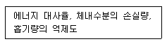
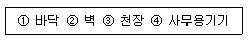
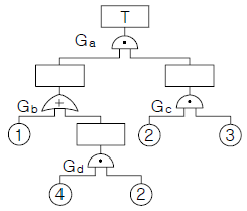

건설안전산업기사 (2005-05-29 기출문제)
1과목: 산업안전관리론
1. 다음 중 스트레스의 해소법으로 좋지 못한 방법은?
- 주위 사람과의 대화
- 자기 감정을 무시할 것
- 자기 자신에 대한 반성
- 양보와 협조
(정답률: 86%)

2. 버드(Bird)의 재해발생에 관한 연쇄이론 중 징후는 몇 단계에 해당하는가?
- 제1단계
- 제2단계
- 제3단계
- 제4단계
(정답률: 58%)
3. 그림의 착시(錯視)현상 중 Herling 착시현상에 해당되는 것은?
- a가 b보다 길게 보인다.

- a는 세로로 길어 보이고, b는 가로로 길어 보인다.

- a는 양단이 벌어져 보이고 b는 중앙이 벌어져 보인다.

- a와 c가 일직선으로 보인다.

(정답률: 50%)
4. 무재해 운동의 추진을 위한 3요소에 속하지 않는 것은?
- 작업조건의 기술적 개선
- 톱(top)의 엄격한 안전경영자세
- 안전활동의 라인(Line)화
- 직장 자주안전활동의 활성화
(정답률: 57%)
5. 도수율이 0.02, 강도율이 1.5인 사업장의 종합 재해지수는 얼마인가?
- 5.031
- 2.151
- 0.356
- 0.173
(정답률: 75%)
6. 안전관리의 4M 가운데 Media 란 무엇을 의미하는 것인가?
- 인간과 기계를 연결하는 매개체
- 인간과 관리를 연결하는 매개체
- 기계와 관리를 연결하는 매개체
- 인간과 작업환경을 연결하는 매개체
(정답률: 60%)
7. 하버드 학파(Havard School)의 학습지도법의 5단계 중 3단계에 해당하는 것은?
- 교시한다.
- 연합시킨다.
- 총괄한다.
- 응용시킨다.
(정답률: 67%)
8. 공장내에 안전표지를 부착하는 주된 이유는?
- 능률적인 작업을 유도하기 위하여
- 인간 심리의 활성화 촉진
- 인간 행동의 변화 통제
- 공장내의 환경 정비 목적
(정답률: 53%)
9. 안전교육의 방법 중 프로그램 학습법의 장점이라 할 수 있는 것은?
- 기본 개념학이나 논리적 학습에 유리하다.
- 여러 가지 수업 매체를 동시에 활용할 수 있다.
- 사실, 사상을 시간, 장소의 제한 없이 제시할 수 있다.
- 학습자의 태도, 정서 등의 감화를 위한 학습에 효과적 이다.
(정답률: 27%)
10. 안전교육 계획에 포함하여야 할 사항이 아닌 것은?
- 교육의 종류 및 대상
- 교육의 과목 및 내용
- 교육장소 및 방법
- 교육지도안
(정답률: 79%)
11. 기계적 에너지에 의한 재해는 크게 정적형태와 동적형태로 구분되는데 정적형태의 재해에 속하지 않는 것은?
- 낙하
- 충돌
- 붕괴
- 추락
(정답률: 57%)
12. 근로자가 안전작업 표준을 이행하지 않는다면 다음 중 무엇의 결함이 있겠는가?
- 안전교육의 결함
- 안전태도의 결함
- 작업분석의 불완전
- 안전작업 표준 미작성
(정답률: 63%)
13. 작업시 착용해야할 보호구가 잘못 연결된 것은?
- 폐수 맨홀청소 - 분진마스크
- 아세틸렌용접 - 용접용 보안면
- 용광로 - 고열복
- 3m 위 작업 - 안전밸트
(정답률: 83%)
14. 다음 중 라인(line)식 안전 조직의 특징이 아닌 것은?
- 모든 명령은 생산 계통을 따라 이루어진다.
- 생산조직 전체에 안전관리 기능을 부여한다.
- 경영자의 조언과 자문역할을 한다.
- 소규모가 사업장에 적합하다.
(정답률: 58%)
15. 우리나라 산업안전 표지의 명칭으로서 잘못 표기된 것은?
- 금지표지
- 경고표지
- 안내표지
- 위험표지
(정답률: 53%)
16. 일상점검내용 중 이상소음, 냄새, 진동, 기름누출 등의 위험요소 중심으로 주안점을 두고 점검하는 시기는?
- 작업전
- 작업중
- 작업종료시
- 사고발생 직후
(정답률: 47%)
17. 안전관리 조직의 기본 유형이 아닌 것은?
- line system
- staff system
- line-staff system
- safety system
(정답률: 70%)
18. 피로의 예방과 회복대책을 설명한 것이다. 틀린 것은?
- 작업속도를 적절하게 할 것
- 직장체조를 통한 혈액순환 촉진 할 것
- 작업부하를 크게 할 것
- 근로시간과 휴식을 적정하게 할 것
(정답률: 94%)
19. 다음은 기억과 망각에 관한 내용이다. 틀린 것은?
- 기억된 내용의 망각은 시간의 경과에 비례하여 서서히 이루어진다.
- 의미없는 내용은 의미있는 내용보다 빨리 망각한다.
- 사고력을 요하는 내용이 단순한 지식보다 기억 파지의 효과가 높다.
- 학습 직후에 복습하면 기억파지의 효과가 높아진다.
(정답률: 44%)
20. 안전교육방법 중 실연법의 설명으로 맞는 것은?
- 시설유지비가 적게든다.
- 학생들의 참여가 제약된다.
- 학생들의 사회성이 결여되기 쉽다.
- 다른 방법보다 교사 대 학습자수의 비율이 높다.
(정답률: 50%)
2과목: 인간공학 및 시스템안전공학
21. 다음 보기의 내용은 인간의 신뢰성과 관련하는 여러 특 성 중 무엇을 측정하기 위함인가?

- 주의력
- 긴장수준
- 의식수준
- 관찰력
(정답률: 35%)
22. 경계 및 경보신호를 설계할 때 적합하지 않는 것은?
- 장애물이 있을 시는 500Hz 이하의 진동수를 갖는 신호를 사용
- 주의를 끌기 위해서는 변조된 신호를 사용
- 배경소음의 진동수와 같은 신호를 사용
- 경보효과를 높이기 위해서 개시시간이 짧은 고감도 신호를 사용
(정답률: 48%)
23. 다음 중 사무실 설계시 추천반사율이 낮은 것부터 순서대로 나열한 것은?

- ①-②-③-④
- ③-④-①-②
- ①-④-②-③
- ①-④-③-②
(정답률: 81%)
24. 결함수 그림에 해당하는 minimal cut set을 구하면?

- [2,3]
- [1,2,3]
- [1,2,3][2,3,4]
- [1,2,3][1,3,4]
(정답률: 36%)
25. 조명관리는 안전과 생산에 지대한 영향을 준다. 사무실이나 일반적 산업상황에서 광속 발산비(Luminance Ratio)의 추천 발산비는 얼마인가?
- 2 : 1
- 3 : 1
- 4 : 1
- 5 : 1
(정답률: 38%)
26. 인간과 기계의 기능 비교에 대한 설명 중 맞지 않는 것은?
- 인간은 임기응변능력이 기계보다 앞선다.
- 기계는 쉽게 피로하지 않는다는 점에서 인간보다 앞선다.
- 반복작업인 경우는 인간의 신뢰도는 기계보다 앞선다.
- 인간은 귀납적으로 정보를 처리한다.
(정답률: 86%)
27. 인간-기계통합 체계에서 인간 또는 기계에 의해서 수행되는 4가지 기본 기능 중 다른 세 가지 기능 모두와 상호작용 하는 것은?
- 감지
- 정보 보관
- 행동 기능
- 정보처리 및 의사결정
(정답률: 35%)
28. 시각적 표시장치에서 지침설계의 요령이 아닌 것은?
- 뾰족한 지침을 사용한다.
- 지침의 끝은 눈금과 겹치도록 한다.
- 지침을 눈금면에 밀착시킨다.
- 원형 눈금일 경우 지침의 색은 선단에서 눈금의 중심까지 칠한다.
(정답률: 24%)
29. 통제 표시비의 설계시 고려사항이 아닌 것은?
- 계기의 크기
- 조작거리
- 조작시간
- 방향성
(정답률: 14%)
30. 체계(system)의 특성이 아닌 것은?
- 집합성
- 관련성
- 목적 추구성
- 환경독립성
(정답률: 73%)
31. 보전성 설계의 고려사항이 아닌 것은?
- 고장이나 결함이 발생한 부분에 접근성이 좋을 것
- 고장이나 결함의 징조를 쉽게 검출할 수 있을 것
- 경험이 풍부하고 수리에 숙련되어 능력이 충분할 것
- 고장, 결합부품 및 재료의 교환이 신속하고 쉬울 것
(정답률: 74%)
32. 선형조정장치를 16cm 옮겼을 때 선형표시 장치가 5cm 움직였다면 통제 표시비(C/D비)는?
- 0.2
- 2.5
- 3.2
- 5.3
(정답률: 44%)
33. 인간공학적으로 조작구를 설계할 때 고려하여야 할 사항이 아닌 것은?
- 중량감
- 탄력성
- 마찰력
- 관성력
(정답률: 37%)
34. 가치척도의 신뢰성이란?
- 보편성을 뜻한다.
- 정확성을 뜻한다.
- 객관성을 뜻한다.
- 반복성을 뜻한다.
(정답률: 68%)
35. 인간 에러(human error)를 일으킬 수 있는 정신적 요소가 아닌 것은?
- 방심과 공상
- 개성적 결함요소
- 판단력의 부족
- 기능정도
(정답률: 61%)
36. 광원으로부터의 직사휘광을 처리하는 방법이 아닌 것은?
- 광원의 휘도를 줄이며 수를 줄인다.
- 광원을 시선에서 멀리 둔다.
- 휘광원 주위를 밝게 하여 휘도비를 줄인다.
- 가리개, 갓 등을 사용한다.
(정답률: 32%)
37. 인간이 앉아서 작업대 위에 손을 움직여 나타나는 평면 작업 중 팔을 굽히고도 편하게 작업을 하면서 좌우의 손을 움직여 생기는 작은 원호형의 영역을 무엇이라 하는가?
- 최대작업역
- 평면작업역
- 작업공간포락면
- 정상작업역
(정답률: 47%)
38. 인간과 기계계에서 병렬로 연결된 작업의 신뢰도는 얼마인가? (단, 인간은 0.8, 기계는 0.98의 신뢰도를 갖고 있다.)
- 0.996
- 0.986
- 0.976
- 0.966
(정답률: 47%)
39. 인간의 정보처리 능력의 한계는 시간적으로 표시하는 경우 어느 정도인가? (단, 계속 발생하는 신호의 뒷부분을 검출할 수 없는 경우가 가끔 발생할 때의 시간)
- 0.1초 이내
- 0.2초 이내
- 0.3초 이내
- 0.5초 이내
(정답률: 30%)
40. 인간공학 전문분야를 특성화하여 다른 응용분야와 구별한 일반적 견해와 거리가 가장 먼 것은?
- 인간에게 쓸모가 있는 사물, 기계 등을 만들되, 항상 설계자가 우선이다.
- 인간의 능력 및 한계와 설계 내용에 대한 평가에는 개인차가 있음을 인식한다.
- 사물, 절차 등의 설계가 인간의 행동과 복지에 영향을 미친다고 믿는다.
- 과학적 방법과 객관적 자료에 바탕을 두고 가설을 시험하여 인간행동에 관한 기초 자료를 얻는다.
(정답률: 56%)
3과목: 건설시공학
41. 용접작업에서 용접봉을 용접방향에 대하여 서로 엇갈리게 움직여서 용가금속을 용착시키는 운봉방법은 어느 것인가?
- 가용접
- 개선
- 레그
- 위빙
(정답률: 75%)
42. 콘크리트의 경화 후 거푸집 제거 작업의 주의사항 중 옳지 않은 것은?
- 진동, 충격 등을 주지 않고 콘크리트가 손상되지 않도록 순서있게 제거한다.
- 지주를 바꾸어 세울 동안에는 상부의 작업을 제한하여 적재하중을 적게하고, 집중하중을 받는 부분의 지주는 그대로 둔다.
- 제거한 거푸집은 재사용할 수 있도록 적당한 장소에 정리하여 둔다.
- 구조물의 손상을 고려하여 제거시 찢어져 남은 거푸집 쪽널은 그대로 두고 미장공사를 한다.
(정답률: 75%)
43. 기존 건축물의 기초지정을 보강하거나 또는 거기에 새로운 기초를 삽입하거나, 지지면을 더 깊은 지반에 옮기는 공사의 통칭명은?
- 언더피닝 공법(under pinning method)
- 소일콘크리트 공법(soil concrete method)
- 웰포인트 공법(wellpoint method)
- 아일랜드 공법(island method)
(정답률: 56%)
44. 발주자와 수급자의 상호 신뢰를 바탕으로 팀을 구성해서 프로젝트의 성공과 상호이익 확보를 위하여 공동으로 프로젝트를 집행 및 관리하는 공사계약 방식은?
- BOT 방식
- 파트너링 방식
- CM 방식
- 공동도급 방식
(정답률: 56%)
45. 콘크리트 공사에서 거푸집 설계시 고려사항으로 가장 거리가 먼 것은?
- 콘크리트의 측압
- 콘크리트 타설시의 하중
- 콘크리트 타설시의 충격과 진동
- 콘크리트 타설시의 온도
(정답률: 50%)
46. 건설도급회사의 공사실적 및 기술능력에 적합한 3∼7개 정도의 시공회사를 입찰에 참여시키는 방법은?
- 특명입찰
- 일반경쟁입찰
- 지명경쟁입찰
- 제한경쟁입찰
(정답률: 60%)
47. 말뚝박기 공사에 관한 내용 중 옳지 않은 것은?
- 추의 낙하고는 높을수록 좋다.
- 다소 밀실한 지반에서 말뚝은 중앙에서 박기 시작하여 주변으로 향하게 박는다.
- 추의 중량은 말뚝중량의 약 2배로 한다.
- 박을 때 파손을 막기 위하여 말뚝머리를 철재링으로 보호한다.
(정답률: 48%)
48. 기초의 종류 중 기초슬래브의 형식에 따른 분류가 아닌 것은?
- 독립기초
- 연속기초
- 복합기초
- 직접기초
(정답률: 53%)
49. 벽식 철근콘크리트 구조를 시공할 경우 벽과 바닥의 콘크리트 타설을 한번에 가능하게 하기 위하여 벽체용 거푸집과 슬래브 거푸집을 일체로 제작하여 한 번에 설치하고 해체할 수 있도록 한 시스템화 거푸집은?
- 터널폼
- 슬립폼
- 플라잉폼
- 트래블링폼
(정답률: 85%)
50. 다음에 기술한 지반개량공법 중에서 강제압밀공법에 해당하지 않는 것은 어느 것인가?
- 수위저하법
- 고결공법
- 샌드드레인공법
- 성토공법
(정답률: 27%)
51. 지하구조물의 시공순서를 지상에서부터 시작하여 점차 깊은 지하로 진행하여 가면서 완성하는 구체 흙막이 공법은 무엇인가?
- 진관식 기초말뚝 공법
- 심초 공법
- 탑다운(top down) 공법
- 뉴매틱 웰 케이슨 공법
(정답률: 36%)
52. 공장에서 가공 또는 조립을 완료한 철골부재에 대하여 녹막이 도장을 하여야 할 곳은?
- 콘크리트에 묻히는 부분
- 리벳머리
- 고력볼트 마찰접합부의 마찰면
- 조립에 의하여 면맞춤 되는 부분
(정답률: 53%)
53. 토공사용 장비가 아닌 것은?
- 로더(loader)
- 파워쇼벨(power shovel)
- 가이데릭(guy derrick)
- 클램쉘(clam shell)
(정답률: 57%)
54. 시공과정상 불가피하게 콘크리트를 이어치기할 때 발생하는 시공불량 이음부를 무엇이라고 하는가?
- 콘스트럭션 조인트 (construction joint)
- 콜드 조인트 (cold joint)
- 콘트롤 조인트 (control joint)
- 익스팬션 조인트 (expansion joint)
(정답률: 50%)
55. 건설공사 준비로서 시공업자가 가장 먼저 고려해야 할 것은?
- 건설대지의 조성
- 가설물의 건설
- 기계공구 및 건설장비의 정비
- 현장원의 편성
(정답률: 50%)
56. +자형의 저항날개를 로드선단에 붙여 지중에 눌러 박아가면서 회전시켜 삽입하며, 그 때의 최대저항치로 지반의 전단강도를 구하는 지반조사법은?
- 표준관입시험
- 스웨덴식 사운딩시험
- 화란식 관입시험
- 베인시험
(정답률: 50%)
57. 철근가공시 갈고리(hook)를 설치하지 않아도 되는 곳은?
- 슬래브의 상부근
- 원형철근의 말단부
- 굴뚝의 철근
- 기둥 및 보의 돌출부분의 철근
(정답률: 13%)
58. 굳지 않은 콘크리트의 시공연도(workability) 측정방법이 아닌 것은?
- 슬럼프시험
- 다짐계수시험
- 비비시험기에 의한 컨시스턴시시험
- 공기 실압력시험
(정답률: 64%)
59. 콘크리트 재료적 성질에 기인하는 콘크리트 균열의 원인이 아닌 것은 ?
- 알칼리 골재반응
- 콘크리트의 중성화
- 시멘트의 수화열
- 혼화재료의 불균일한 분산
(정답률: 43%)
60. 철골공사에서 용접부의 검사항목 중 용접착수전 검사항목이 아닌 것은?
- 트임새 모양
- 모아 대기법
- 구속법
- 용접봉
(정답률: 31%)
4과목: 건설재료학
61. 금속부식을 최소화하기 위한 방법에 대한 설명 중 옳지 않은 것은?
- 가능한 이종 금속을 인접 또는 접촉시키지 않는다.
- 큰 변형을 준 것은 가능한 담금질을 하여 사용한다.
- 표면을 평활하고 깨끗이 하며 가능한 건조 상태를 유지한다.
- 부분적으로 녹이 나면 즉시 제거한다.
(정답률: 75%)
62. 콘크리트 건조수축에 관한 설명 중 옳은 것은?
- 공기량이 같은 조건하에서 단위 골재량이 클수록 건조수축이 크다.
- W/C비가 적을수록 건조수축이 크다.
- 골재의 크기가 일정할 때 슬럼프값이 클수록 건조 수축은 작아진다.
- W/C비가 같은 경우 건조수축은 사용 단위시멘트량이 클수록 크다.
(정답률: 39%)
63. 보통 콘크리트에서 인장강도/압축강도의 비로 가장 알맞은 것은?
- 1/10 ∼ 1/13
- 1/5 ∼ 1/7
- 1/2 ∼ 1/5
- 1/17 ∼ 1/20
(정답률: 63%)
64. 점토의 성질에 관한 설명 중 옳지 않은 것은?
- 알루미나가 많은 점토는 가소성이 좋다.
- 양질의 점토는 건조상태에서 현저한 가소성을 나타내며 가소성이 너무 작은 경우에는 모래 등을 첨가하여 조절한다.
- 점토의 비중은 일반적으로 2.5~2.6의 범위이나 Al2O3가 많은 점토는 3.0에 이른다.
- 강도는 점토의 종류에 따라 광범위하며, 압축강도는 인장강도의 약 5배 정도이다.
(정답률: 31%)
65. 보크사이트와 같은 Al2O3의 함유량이 많은 광석과 거의 같은 양의 석회석을 혼합하여 전기로에서 완전히 용융시켜 이것을 미분쇄한 것으로 조기의 강도발생이 큰 시멘트는?
- 고로시멘트
- 알루미나시멘트
- 중용열포틀랜드시멘트
- 실리카시멘트
(정답률: 53%)
66. 미장재료의 경화에 대한 설명으로 틀린 것은?
- 회반죽은 물과 화학반응하여 경화하는 수경성재료이다.
- 반수석고는 가수 후 20~30분에서 급속 경화하지만, 무수석고는 경화가 늦기 때문에 경화촉진제를 필요로 한다.
- 소석회는 물을 첨가하여 혼합하여 섞은 다음 수분이 증발하면 대기중의 이산화탄소와 반응해서 경화한다.
- 돌로마이트 플라스터는 기경성재료이다.
(정답률: 29%)
67. 멜라민수지에 관한 설명 중 부적당한 것은?
- 무색투명하며 착색이 자유롭다.
- 내열성이 600℃정도로 높다.
- 전기절연성이 우수하다.
- 판재류, 식기류, 전화기 등에 쓰인다.
(정답률: 43%)
68. 석재에 관한 기술 중 틀린 것은?
- 화강암은 실내외 재료로 많이 사용된다.
- 대리석은 실내장식재로 우수하나 산(酸)과 열에는 약하다.
- 화강암은 불연재이므로 화기가 닿는 곳에 사용하기에 적당한 재료이다.
- 트래버틴은 특수한 실내장식재로 대리석의 일종이다.
(정답률: 57%)
69. 다음 중 집성목재의 특징과 관계가 먼 것은?
- 응력에 따라 필요로 하는 단면의 목재를 만들 수 있다.
- 목재의 강도를 인공적으로 자유롭게 조절할 수 있다.
- 3장 이상의 단판인 박판을 홀수로 섬유방향이 직교하도록 접착제로 붙여 만든 것이다.
- 외관이 미려한 박판 또는 치장합판, 프린트합판을 붙여서 구조재, 마감재, 화장재를 겸용한 인공목재의 제조가 가능하다.
(정답률: 64%)
70. 다음 중 경화가 가장 빠른 것은?
- 회반죽
- 소석회
- 소석고
- 돌로마이트 플라스터
(정답률: 35%)
71. 여닫이 창호용 철물이 아닌 것은?
- 정첩
- 도어체크
- 도어스톱
- 레일
(정답률: 54%)
72. 절건상태의 비중(r)이 0.75인 목재의 공극률(공간율)은?
- 약 48.7%
- 약 75.0%
- 약 25.0%
- 약 51.3%
(정답률: 34%)
73. 다음 중 열 및 전기 전도율이 가장 큰 금속은?
- 알루미늄
- 크롬
- 니켈
- 구리
(정답률: 73%)
74. 1종 점토벽돌의 압축강도는 최소 얼마 이상인가? (단, 1kgf=9.80N)
- 25.48N/mm2
- 10.78N/mm2
- 15.69N/mm2
- 22.54N/mm2
(정답률: 39%)
75. 아스팔트와 피치(pitch)에 관한 기술로서 틀린 것은?
- 아스팔트의 단면은 광택이 있고 흑색이다.
- 피치는 아스팔트보다 냄새가 강하다.
- 아스팔트는 피치보다 내구성이 있다.
- 아스팔트는 상온에서 유동성이 없지만 가열하면 피치보다 빨리 부드러워진다.
(정답률: 31%)
76. 콘크리트에 AE제를 혼입하는 이유로서 틀린 것은?
- 콘크리트의 압축강도를 증대시킨다.
- 워커빌리티를 향상시킨다.
- 동결융해 저항성능을 향상시킨다.
- 블리딩 등의 재료분리를 작게 한다.
(정답률: 62%)
77. 석재의 재료적 특징에 해당되지 않는 것은?
- 외관이 장중하고 석질이 치밀한 것을 갈면 미려한 광택이 난다.
- 압축강도는 인장강도에 비해 매우 작아 장대재(長大材)를 얻기 어렵다.
- 화열에 닿으면 화강암은 균열이 발생하여 파괴된다.
- 비중이 커서 가공 작업이 불편하다.
(정답률: 53%)
78. 시멘트의 일반적인 성질에 대한 설명 중 옳지 않은 것은?
- 보통포틀랜드시멘트의 비중은 3.1±0.⑤ 정도이다.
- KS규격에 의하면 포틀랜드 시멘트의 초결은 60분 이상, 종결은 10시간 이하로 규정되어 있다.
- 시멘트의 분말도가 클수록 수화작용은 빠르다.
- 풍화된 시멘트는 응결이 빨라지고, 경화후의 강도는 커진다.
(정답률: 22%)
79. 다음의 목재의 강도 중 가장 높은 것은?
- 응력의 방향이 섬유에 평행할 경우의 압축강도
- 응력의 방향이 섬유에 평행할 경우의 전단강도
- 응력의 방향이 섬유에 평행할 경우의 인장강도
- 응력의 방향이 섬유에 수직일 경우의 휨강도
(정답률: 60%)
80. 강도 및 내구성이 좋고, 가공이 용이하며, 저렴하여 급배수관으로 가장 널리 사용되는 파이프제품은?
- 경질염화비닐관
- 아크릴수지관
- 페놀수지관
- 불소수지관
(정답률: 29%)
5과목: 건설안전기술
81. 달비계에 사용하는 달기와이어로프의 기준에 대한 설명 으로 틀린 것은?
- 와이어로프의 한 꼬임에서 소선의 수가 8% 이상 절단된 것은 사용할 수 없다.
- 지름의 감소가 공칭지름의 7%를 초과하는 것은 사용 할 수 없다.
- 심하게 변형, 부식된 것은 사용할 수 없다.
- 안전 계수는 10 이상인 것을 사용하여야 한다.
(정답률: 73%)
82. 낙하물 방지를 위하여 비계의 외부에 설치하는 방호선반의 내민길이 ( ① )와 수평면에 대한 각도 ( ② )는 각각 얼마를 기준으로 하는가?
- ① 벽면으로부터 2m 이상, ② 20도 내지 30도 유지
- ① 벽면으로부터 2m 이상, ② 30도 내지 40도 유지
- ① 벽면으로부터 3m 이상, ② 20도 내지 30도 유지
- ① 벽면으로부터 3m 이상, ② 30도 내지 40도 유지
(정답률: 58%)
83. 화물자동차에 짐을 싣는 작업 또는 내리는 작업을 하는 때에 추락에 의한 근로자의 위험을 방지하기 위하여 안전하게 상승 또는 하강하기 위한 설비를 설치하여야 하는 기준으로 옳은 것은?
- 바닥으로부터 짐 윗면까지의 높이가 2m 이상일 때
- 바닥으로부터 짐 아래면까지의 높이가 2m 이상일 때
- 바닥으로부터 짐 윗면까지의 높이가 1m 이상일 때
- 바닥으로부터 짐 아래면까지의 높이가 1m 이상일 때
(정답률: 40%)
84. 부두, 안벽 등 하역작업을 하는 장소에 대하여 부두 또는 안벽의 선을 따라 통로를 설치할 때 통로의 최소 폭은?
- 70cm
- 80cm
- 90cm
- 100cm
(정답률: 43%)
85. 건설공사중 추락 재해예방을 위한 추락방지용 방망의 그물코 크기로 알맞는 것은?
- 가로, 세로가 10cm 이하
- 가로, 세로가 15cm 이하
- 가로, 세로가 20cm 이하
- 가로, 세로가 25cm 이하
(정답률: 45%)
86. 재해사고를 예방하기 위해 크레인에 설치된 안전장치가 아닌 것은?
- 과부하 방지장치
- 브레이크장치
- 권과방지장치
- 버켓장치
(정답률: 48%)
87. 콘크리트 타설시 거푸집의 측압에 영향을 미치는 인자에 대한 설명으로 틀린 것은?
- 부재의 단면이 클수록 크다.
- 슬럼프가 작을수록 크다.
- 거푸집 속의 콘크리트 온도가 낮을수록 크다.
- 붓는 속도가 빠를수록 크다.
(정답률: 72%)
88. 건설업 산업안전보건관리비 계상 및 사용기준을 제정하여 사용하게 된 직접적인 동기로 가장 알맞은 것은?
- 공사의 품질을 좋게 하기 위함이다.
- 공사의 원가를 절감하기 위함이다.
- 공사시에 근로자의 생명과 안전을 지키기 위함이다.
- 공사 중 공사기간을 단축하기 위함이다.
(정답률: 55%)
89. 다음 중 거푸집 동바리를 고정하거나 조립 또는 해체작업을 할 때 안전담당자의 유해⋅위험방지업무와 가장 거리가 먼 것은?
- 안전한 작업방법을 결정하고 작업을 지휘하는 일
- 재료, 기구의 결함유무를 점검하고 불량품을 제거하는일
- 작업 중 안전대 및 안전모 등 보호구 착용상황을 감시하는 일
- 거푸집 동바리의 강도를 측정하는 일
(정답률: 48%)
90. 다음은 작업으로 인하여 물체가 낙하 또는 비래할 위험이 있는 경우 위험방지를 위해 취해야할 조치사항으로 가장 거리가 먼 것은?
- 낙하물 방지망 또는 방호선반의 설치
- 출입금지구역의 설정
- 보호구의 착용
- 감시인 배치
(정답률: 55%)
91. 지하수의 유량계산을 위한 Darcy의 법칙에서 투수계수에 대한 설명으로 틀린 것은?
- 모래는 진흙보다 투수계수가 크다.
- 투수계수는 모래에서 평균입자지름(유효 입경)의 제곱에 비례한다.
- 투수계수는 현장시험을 통하여 구할 수 있다.
- 투수계수는 간극의 크기가 작을수록 증가한다.
(정답률: 43%)
92. 굴착기계로 채석작업시 근로자의 작업장에 후진하여 접근하거나 전락할 우려가 있을 때 사고를 방지하기 위하여 배치하여야 하는 사람은?
- 작업지휘자
- 관리감독자
- 감시인
- 유도자
(정답률: 75%)
93. 흙의 안식각은 어느 각을 말하는가?
- 자연 경사각
- 비탈면각
- 시공 경사각
- 계획 경사각
(정답률: 41%)
94. 높이 2m 이상인 작업발판의 끝이나 개구부 등에서 추락을 방지하기 위한 설비로 가장 적합하지 않은 것은?
- 안전난간
- 덮개
- 방호선반
- 울타리
(정답률: 37%)
95. 현장에서 강관을 사용하여 비계를 구성하는 때에 비계기둥간의 얼마를 초과해서는 안되는가?
- 200kg
- 300kg
- 400kg
- 500kg
(정답률: 50%)
96. 거푸집동바리의 수평변위를 방지하기 위한 수평연결재에 대한 기준으로 틀린 것은?
- 강관을 사용하는 경우 높이 2m이내마다 수평연결재를 2개 방향으로 설치한다.
- 파이프서포트를 사용하는 경우 높이가 3.5m를 초과할 때 높이 2m이내마다 수평연결재를 2개 방향으로 설치한다.
- 조립강주를 사용하는 경우 높이가 4m를 초과할 때 높이 4m이내마다 수평연결재를 2개 방향으로 설치한다.
- 목재를 사용하는 경우 높이 4m이내마다 수평연결재를 2개 방향으로 설치한다.
(정답률: 22%)
97. 철골작업시 추락재해를 방지하기 위한 설비가 아닌 것은?
- 안전대 및 구명줄
- 어스 앵커
- 승강용 트랩
- 추락방지용 방망
(정답률: 74%)
98. 다음 중 스크레이퍼의 용도로 가장 거리가 먼 것은?
- 싣기
- 운반
- 하역
- 다짐
(정답률: 58%)
99. 근로자의 작업배치시 추락위험이 있을 때 비계 조립 등에 의하여 작업발판을 설치해야 하는 높이 기준은?
- 1m 이상
- 2m 이상
- 3m 이상
- 4m 이상
(정답률: 55%)
100. 비계의 수평재의 최대 휨모멘트가 5,000kgfㆍcm, 수평재의 단면 계수가 5cm3 일 때 휨응력(σ)은 얼마인가?
- 500kgf/cm2
- 1,000kgf/cm2
- 2,000kgf/cm2
- 2,500kgf/cm2
(정답률: 46%)